좋아지는 것만 보여 주지 않습니다.
기존 상점의 상승 화살표는 장비 자체 보너스를 뜻했습니다. 이제 선택한 캐릭터의 현재 장비를 실제 장착 규칙으로 가상 교체하고, 전투에서 사용하는 총능력치 계산으로 전후를 비교합니다.
숙련자의 검을 교체하면 공격 30 → 25, 방어 18 → 10, 정신 8 → 8, 민첩 8 → 6. 네 항목을 모두 보여 주며 0과 손실을 숨기지 않습니다.
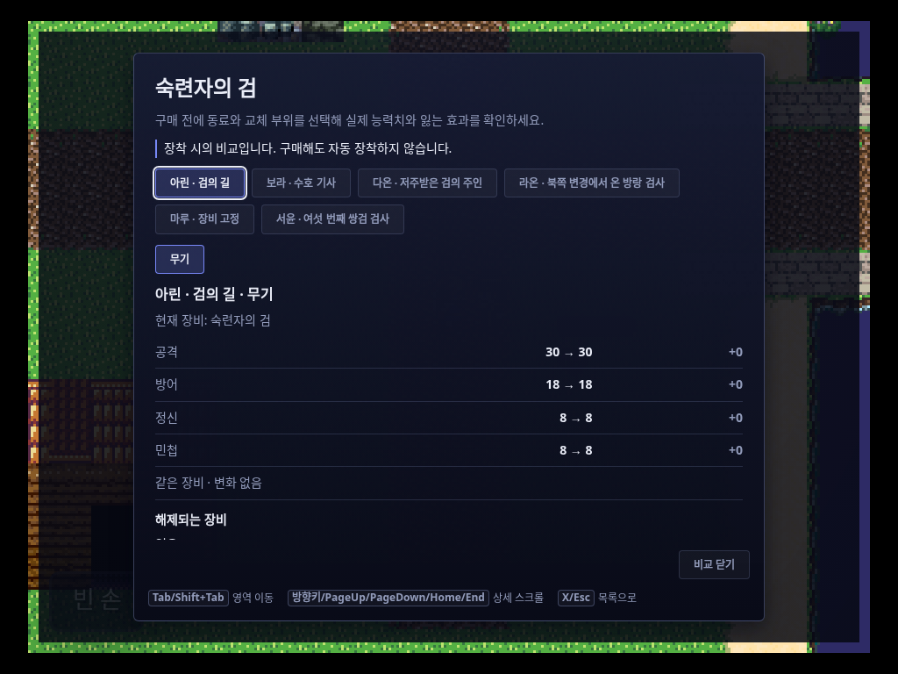
동일 장비를 또 산다고 캐릭터가 강해진다고 표시하지 않습니다. 현재 장비와 비교 대상이 같으면 변화 없음으로 표시합니다.
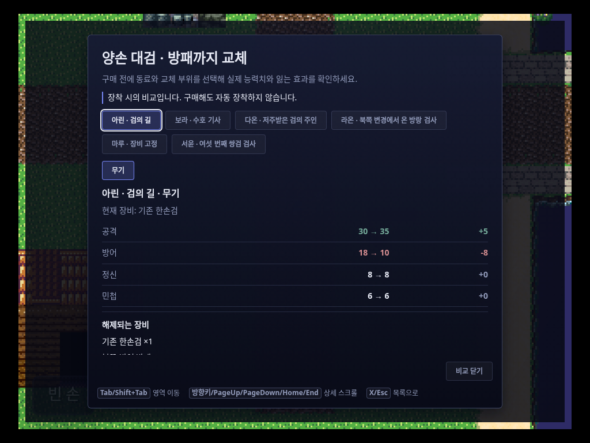
한손검과 방패가 해제되는 실제 장착 규칙을 적용했습니다. 공격은 30 → 35지만 방어는 18 → 10으로 떨어집니다. 양손 슬롯을 두 번 더하지 않습니다.
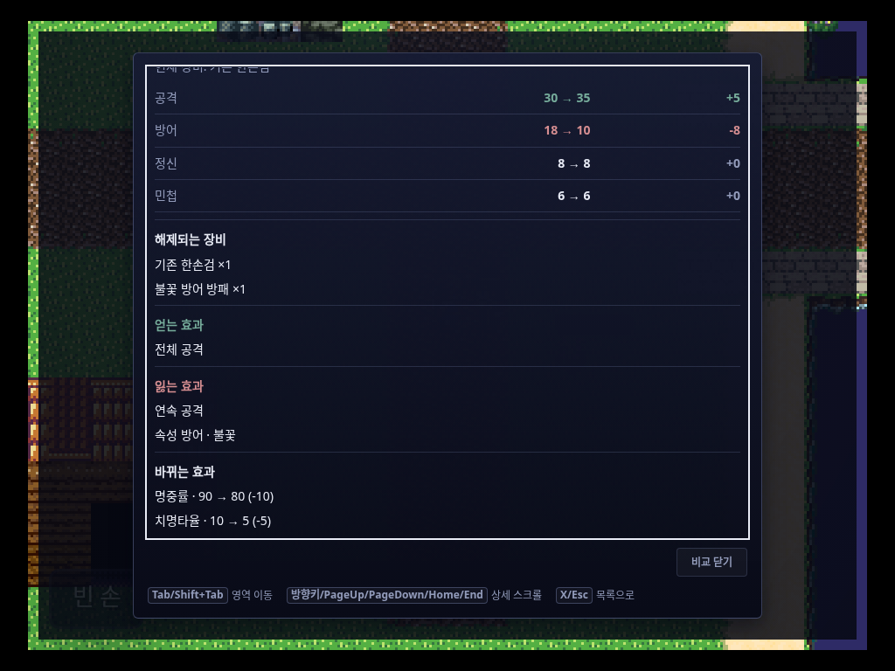
전체 공격을 얻는 대신 연속 공격과 불꽃 방어를 잃는 구성을 확인했습니다. 명중률·치명타율도 전후 값으로 표시합니다.
현재 레벨·직업·성장·승급 이력·영구 능력치 보너스를 유지하고 장비만 가상 교체합니다. 비교 전후의 골드·재고·장비·성장 상태가 동일한지도 실제 세션에서 검사했습니다. 전투 중 일시 버프까지 포함한 모든 전투 모드의 예측을 주장하는 것은 아닙니다.
동료와 부위, 그리고 교체할 수 없는 이유.
모든 실제 파티원을 선택할 수 있습니다. 쌍수·사용자 정의 슬롯은 프로젝트의 장착 규칙을 따르며, 저주·고정·직업 제한은 불가능한 상승치를 보여 주는 대신 이유와 현재 값을 표시합니다.
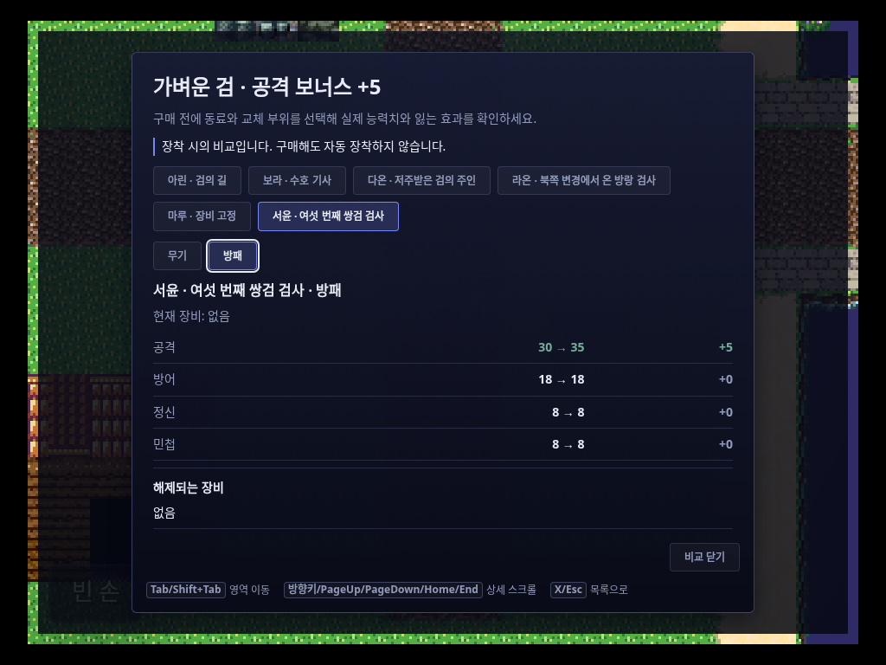
네 명에서 목록을 자르지 않습니다. 쌍수 가능한 동료의 방패 슬롯에 한손 무기를 비교하면 공격 +5, 나머지 변화 0으로 계산됩니다.
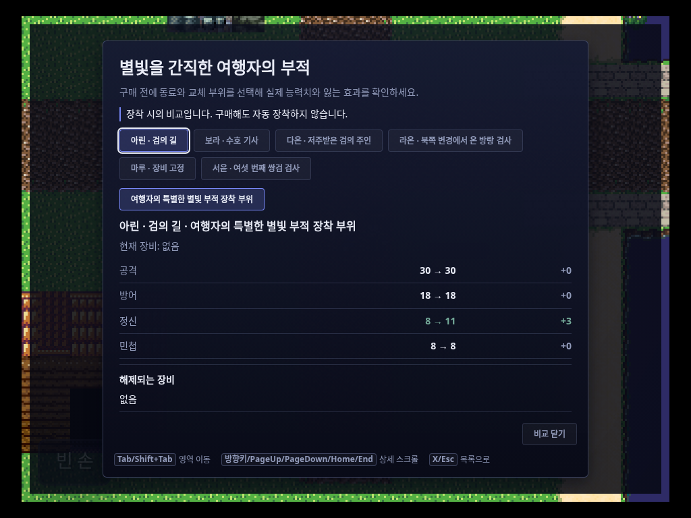
여행자의 특별한 별빛 부적 장착 부위를 선택했습니다. 기존 무기를 유지하며 정신 8 → 11을 보여 줍니다.
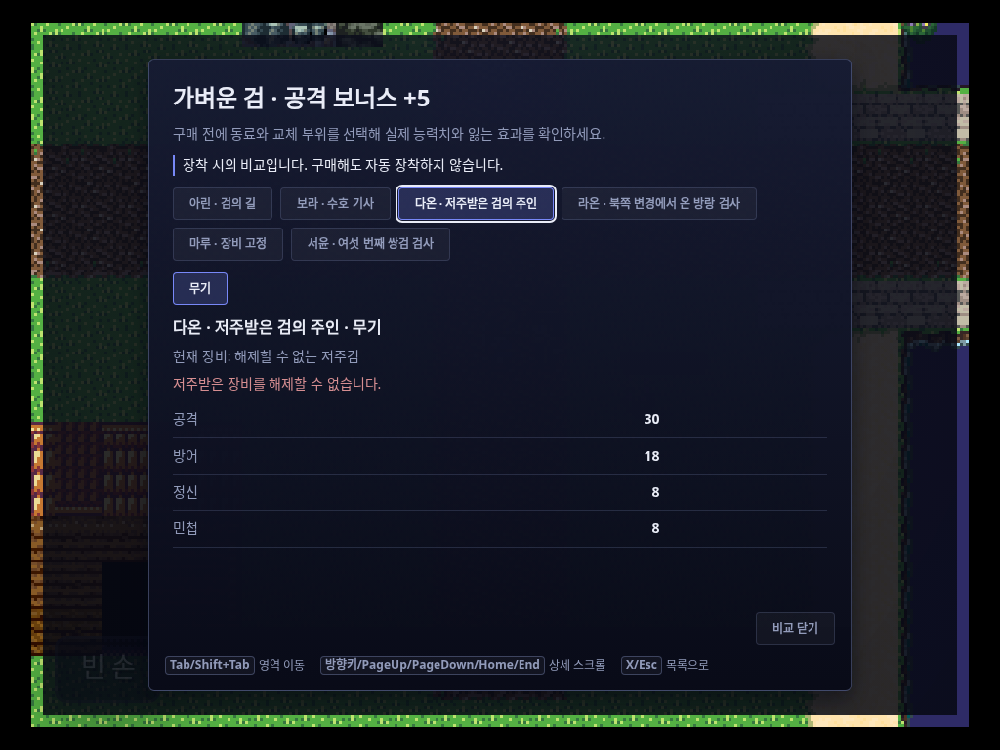
가상 장착도 실제 장착 규칙을 따릅니다. 현재 값은 남기되 불가능한 교체의 다음 값이나 상승치를 만들지 않습니다.
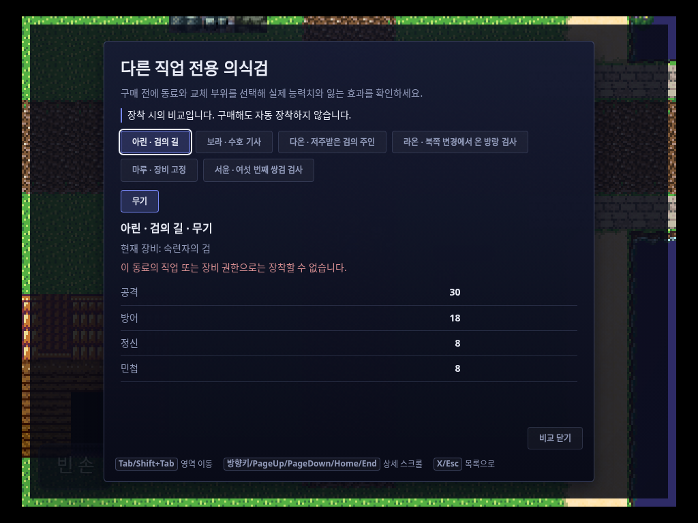
직업·장비 권한으로 장착할 수 없는 상품도 이유를 읽을 수 있습니다. 비교를 위해 장비나 소지품을 실제로 바꾸지 않습니다.
사고판 직후, 한도와 합계도 함께 바뀝니다.
장비 기본 가격이 0으로 떨어지던 조회와 상인 할인 경로를 고쳤습니다. 거래 후에는 선택 행뿐 아니라 다른 행의 구매·판매 가능 수량도 갱신합니다. 0개만 살 수 있는 상품은 설명을 읽을 수 있지만 거래는 거절됩니다.
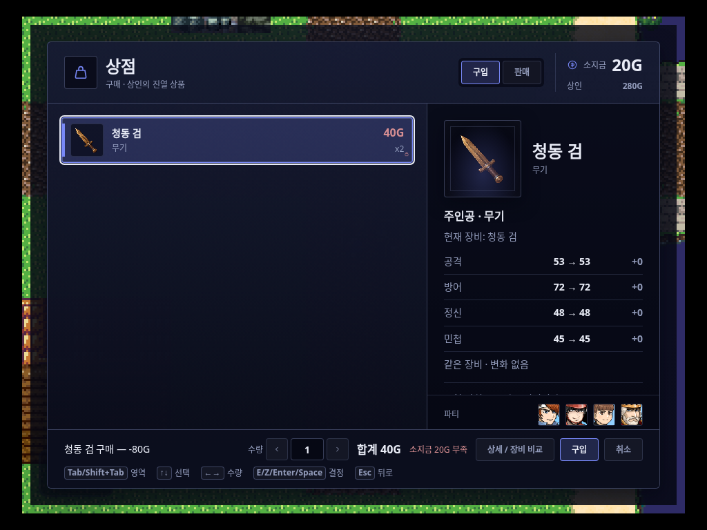
가격 오버라이드 없이 장비 DB 기본가를 사용했습니다. 소지금 100 → 20G, 상인 200 → 280G, 소지 장비 0 → 2개. 구매 한도는 즉시 0으로 갱신됩니다.
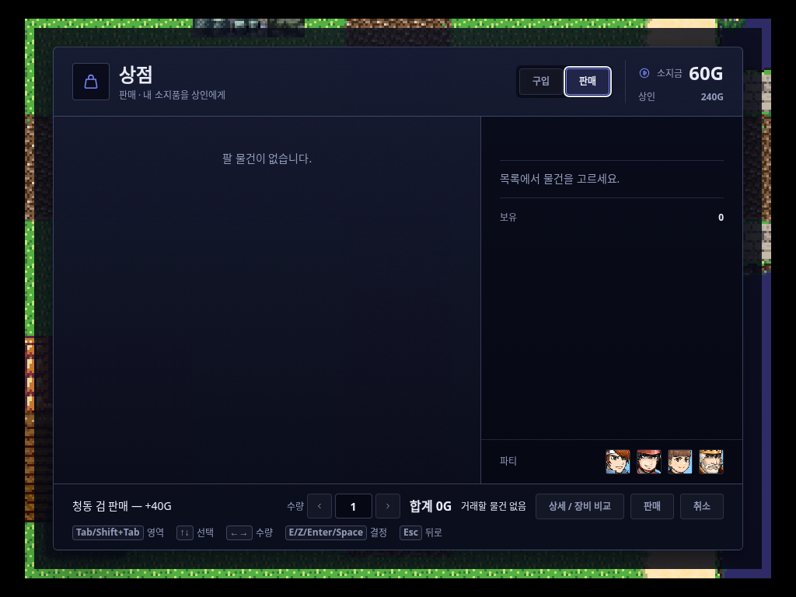
개당 20G로 판매한 뒤 소지금 60G, 상인 240G, 해당 소지품 0개를 확인했습니다. 마지막 행이 제거되며 남은 조작으로 이동할 수 있습니다.
| 실제 상태 | 소지금 | 상인 | 소지 장비 | 확인한 결과 |
|---|---|---|---|---|
| 입장 | 100G | 200G | 0개 | 오버라이드 없이 기본가 40G |
| 2개 구매 | 20G | 280G | 2개 | 행 한도 0 · 입력 1 · 합계 40G · 부족 금액 표시 |
| 추가 구매 시도 | 20G | 280G | 2개 | 거절 · 상태 변화 없음 |
| 2개 판매 | 60G | 240G | 0개 | 마지막 행 제거 · 빈 목록 조작 가능 |
비교하다가 물건을 사 버리지 않도록.
Tab / Shift+Tab
목록 → 구매/판매 → 종류 → 상세 → 수량 → 결정 → 취소
↑↓ · ←→
영역 안 선택. 수량 모드의 목록 좌우는 수량, 단일 모드는 목록 탐색.
E / Z / Enter / Space
현재 조작 확정. 수량 입력·상세 스크롤에서는 구매하지 않음.
Esc · Home / End
상세 닫기와 원래 포커스 복원. 상세의 시작과 끝까지 읽기.
방향키를 누르고 이동하는 동작은 유지하고, 결정·취소 키의 자동 반복은 막았습니다. 테스트는 실제 키보드 입력을 사용하며, 반복 플래그 검사는 CDP 네이티브 키 이벤트로 구분해 기록했습니다.
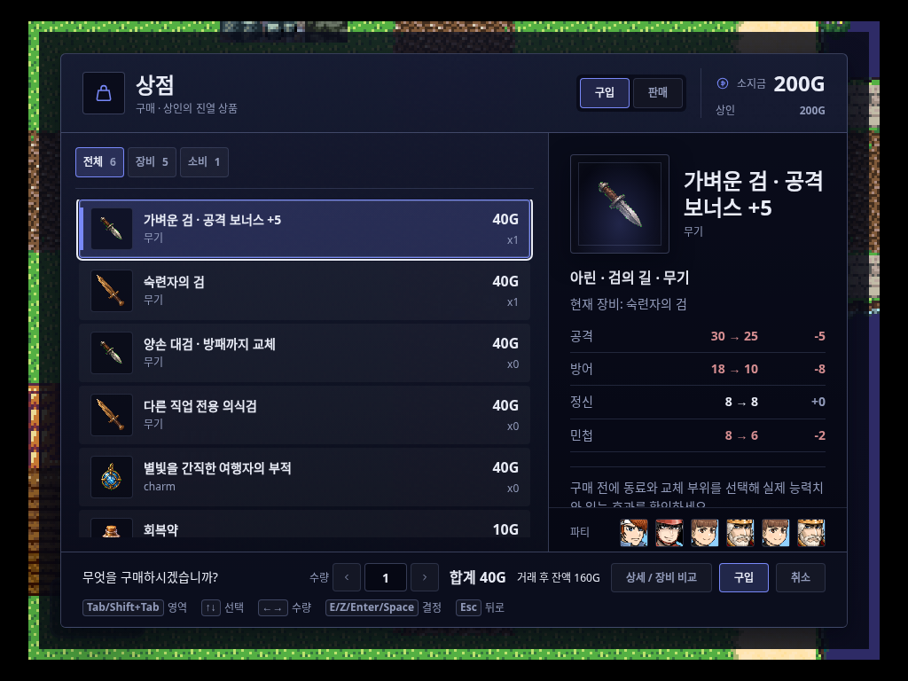
상품 그림은 보조하고, 캐릭터·현재 장비·전후 능력치가 구매 판단을 돕습니다. 상세 비교는 독립된 화면으로 열 수 있습니다.
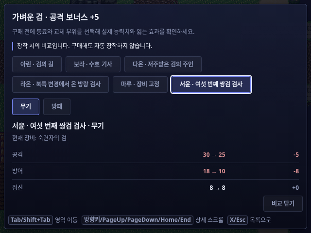
선택된 동료와 키보드 포커스를 구분합니다. 긴 이름과 여섯 번째 동료까지 탐색하고 정확한 부위로 비교합니다.
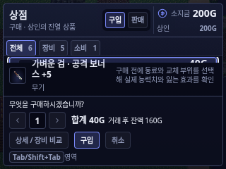
좁은 화면은 목록·잔액·수량·거래 조작을 우선합니다. 비교 정보를 없애지 않고 전체 상세를 여는 경로를 제공합니다.
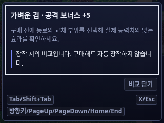
동료와 슬롯, 네 능력치, 제약과 효과는 상세 스크롤 안에 있습니다. 작은 화면에서 다시 키를 배울 필요가 없도록 같은 탐색 규칙을 사용합니다.
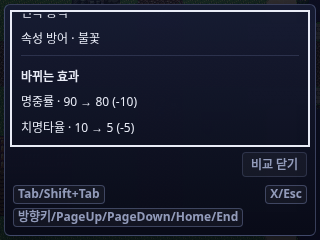
End로 마지막 효과까지, Home으로 처음까지 이동했습니다. Escape로 닫으면 원래 상세 열기 버튼에 포커스가 복원됩니다.
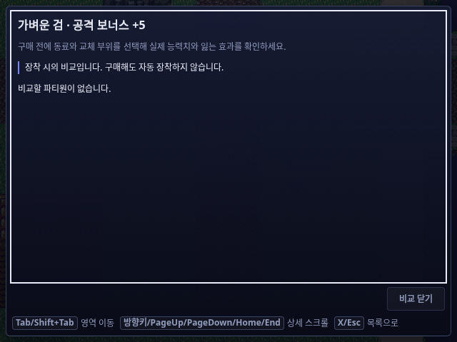
부팅 후 changeParty 제거 이벤트를 거쳐 파티를 비웠습니다. 존재하지 않는 동료나 가짜 능력치를 만들지 않고 비교 불가 상태를 표시합니다.
1024×768, 640×480, 320×240 각각 새 플레이어 컨텍스트로 부팅해 전체 포커스 순환·여섯 번째 동료·보조 손·상세 끝과 처음·필드 복귀를 확인했습니다.
빈 파티, 비장비 상품, 구매 전용, 판매 전용의 빈 재고, 빈 상점도 별도 구성으로 확인했습니다. 스크롤 밖에 있는 내용은 키보드로 도달하는지 검사했으며, 모든 내용을 한 화면에 억지로 축소하지 않았습니다.
통과한 것과 확인하지 못한 것을 구분합니다.
| 검증 | 결과 | 범위 |
|---|---|---|
| 가격·수량 | RED → GREEN · 관련 66개 통과 | 기본가, 할인·오버라이드 우선순위, 실제 거래 후 한도와 재선택 |
| 장착 비교 모델 | RED → GREEN · 관련 49개 통과 | 동일·하락·0·양손·쌍수·사용자 슬롯·제약·성장 문맥·비변이 |
| 입력·UI 통합 | RED → GREEN · 관련 97개 통과 | 실제 포커스·결정 안전성·반복·제약·닫기·리스너 정리 |
| 실제 출하 플레이어 | 3개 시나리오 통과 | economy 9장 / compare 14장 / navigation 23장. 각 결과 JSON과 입력·정리 기록 제공. |
| 타입·빌드 | EXIT 0 | typecheck:app 및 앱·export-player·standalone 전체 빌드 |
| CSS 게이트 | EXIT 0 | budget / graph · 기준선 대비 회귀 없음 |
| 전체 기준선 게이트 | 시간 초과 · 통과 아님 | 1800초 내 완료되지 않아 해당 프로세스를 종료했습니다. |
| 편집기 표면 게이트 | 기존 기준선 불일치 | 수정하지 않은 AI 이미지 입력·M2 이미지 큐·NPC 그래픽 설정·명령 선택기. 기준선을 갱신해 숨기지 않았습니다. |
| HTML 보고서 | 1440 / 390px 통과 | 1440 / 390px, 이미지·링크·비교 버튼·가로 넘침 검사 |
| 시각적 눈검수 | 미확인 | 현재 모델은 이미지 첨부의 픽셀을 볼 수 없습니다. 실제 캡처·DOM·기하·리소스 검증을 미적 완성도 승인으로 바꾸지 않았습니다. |
player.html 코드와 내보내기 저장소 경로를 사용합니다. 네트워크 환경의 간헐적인 모듈 오류를 피하기 위해 빌드 파일을 로컬 응답으로 제공했으며, UI나 거래 계산을 가짜로 대체하지 않았습니다. 라이브 세션의 일부 문맥은 읽기 전용 CDP 검사로 확인했고, 비교 상태를 맞추기 위한 세션 변경은 하지 않았습니다.전체 캡처 46장 · 결과 JSON · 입력 기록 · 정리 영수증
economy


compare


navigation
- 1024x768-stock
- 1024x768-sixth-actor
- 1024x768-offhand
- 1024x768-detail-home
- 1024x768-detail-bottom
- 1024x768-field-return
- 640x480-stock
- 640x480-sixth-actor
- 640x480-offhand
- 640x480-detail-home
- 640x480-detail-bottom
- 640x480-field-return
- 320x240-stock
- 320x240-sixth-actor
- 320x240-offhand
- 320x240-detail-home
- 320x240-detail-bottom
- 320x240-field-return
- no-party-unavailable
- non-equipment-unavailable
- buyOnly-skipped-groups
- sellOnly-empty-list
- empty-notice


재현 명령
node scripts/qa/runtime/shop-decision-report.mjs --case economy node scripts/qa/runtime/shop-decision-report.mjs --case compare node scripts/qa/runtime/shop-decision-report.mjs --case navigation npm test -- test/shopPrice.test.ts test/shopRuntimeUx.test.ts test/shopEquipmentPreview.test.ts test/shopDecisionInput.test.ts